Statistik für alle nicht leeren Stichproben wird berechnet mit:
Statistik für alle nicht leeren Stichproben wird berechnet mit:
Die Vorgehensweise unten basiert auf NAG-Algorithmen.
Der Mediantest untersucht die Differenz zwischen 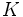 Stichproben der Größen 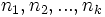, die bezeichnet werden mit
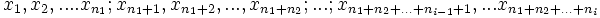
Wenn der Medianwert nicht vom Anwender gegeben ist, werden die kombinierten Daten aus allen Gruppen sortiert und der Median berechnet:
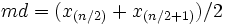 , wenn n gerade ist;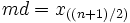, wenn n ungerade ist.
Wobei 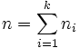, 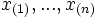 die geordneten Daten aller Beoachtungen von klein zu groß sind.
Der Test fährt fort, indem er eine Häufigkeitentabelle erstellt und die Anzahl der Werte in jeder Stichprobe über und unter dem Median der gemeinsamen Stichprobe angibt:
| Stichprobe 1 | Stichprobe 2 | ?? | Stichprobe K | Gesamtsumme | |
| 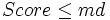 | 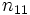 | 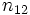 | 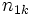 | 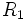 | |
| 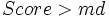 | 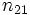…… | 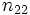…… | 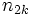…… | 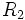…… | |
| Gesamtsumme | 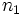…… | 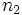 | 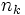 | 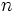 |
Die Statistik für alle nicht leeren Stichproben wird berechnet mit:
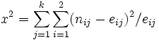 wobei 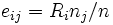
Das Signifikanzniveau stammt aus der Verteilung mit  Freiheitsgraden, wobei die Anzahl der nicht leeren Stichproben ist. Es wird eine Meldung gedruckt, wenn eine Zelle einen erwarteten Wert, der kleiner als 1 ist, besitzt oder mehr als 20% der Zellen erwartete Werte besitzen, die kleiner als 5 sind.
Freiheitsgraden, wobei die Anzahl der nicht leeren Stichproben ist. Es wird eine Meldung gedruckt, wenn eine Zelle einen erwarteten Wert, der kleiner als 1 ist, besitzt oder mehr als 20% der Zellen erwartete Werte besitzen, die kleiner als 5 sind.